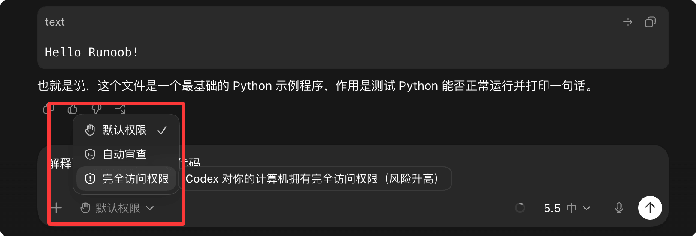

Codex permission settings
Codex App can set three permission modes:
| Permission Mode | What it can do | Will it ask you | Suitable scenarios |
|---|---|---|---|
| Default Permissions | Can read and write the current project and execute basic commands | Will ask when encountering dangerous operations | Daily development (recommended) |
| Automatic Review | AI automatically assesses risk, and low-risk actions are executed directly | Ask only for high-risk actions | Improve Efficiency |
| Full access permissions | Almost equivalent to handing over control of the computer to Codex | Basically doesn't ask | Advanced users / isolated environment |

These three permission modes of the Codex App essentially control:
How much the AI can actually do on your computer, and whether it needs to ask you first.
1. Default permissions (recommended for regular users)
This is the safest and most balanced mode.
Codex can:
- Read project code
- Modify files in the current working directory
- Execute test commands
- Install some dependencies
But the following will usually pop up to ask you first:
- Access files outside the project directory
- Delete large numbers of files
- Network request
- System-level commands
- High-risk shell operations
You can understand it as:
"AI is like an intern; before doing many things, it has to ask for your approval."
Suitable for:
- Daily coding
- Learning projects
- Regular frontend development
- Users unfamiliar with AI agents
2. Automatic review (efficiency mode)
This is the mode many people like the most now.
Core logic:
The AI first judges the risk itself.
For example:
Low-risk operations
Execute directly:
- Modify a few code files
- Run lint
- npm test
- Format code
- Small-scale refactoring
High-risk operations
Will still ask you:
- rm deletion
- System directory operations
- Network access
- Database modification
- Large-scale file changes
So it has far fewer pop-ups than default permissions.
You can understand it as:
There's an automatic reviewer next to the AI.
Suitable for:
- High-frequency development
- Lots of repetitive modifications
- Long-running agent workflows
- Don't want to keep clicking "Allow"
3. Full access permission (dangerous mode)
This mode is the most powerful.
Codex basically gets:
- Full filesystem access
- Network access
- Arbitrary command execution
- Cross-directory operations
- No more frequent asking
Theoretically it can even:
- Delete files
- Modify system configuration
- git push
- ssh
- Operate database
- Call external APIs
Essentially close to:
sudo + 自动化 Agent
Many advanced users do use it this way long-term.
But the risks are real:
Some people have already:
- Deleted the wrong directory
- Wiped the disk
- PowerShell command misoperation
- Be affected by erroneous scripts
Some even lost 1.5TB of data.
So this mode is more suitable for:
- Docker
- Virtual machine
- Temporary environment
- CI/CD
- Sandbox development machine
Not very suitable for:
- Main work computer
- Machines with important data
One-sentence summary
| Mode | Analogy |
|---|---|
| Default Permissions | AI intern |
| Automatic Review | AI engineers + automated risk control |
| Full access permissions | Give AI sudo permissions |
Practical advice
Regular developers:
Default permission or automatic review
It's enough already.
Only when:
- Large-scale automation
- Multi-repository coordination
- Long-running autonomous agent
- Local sandbox environment
Only then is it recommended to enable full access permissions.
Many experienced users' current habit is actually:
平时自动审查（ Auto Review ） 需要时临时切完全访问（ Full Access ） 做完再切回来
This is the most reasonable workflow at present.
other extensions